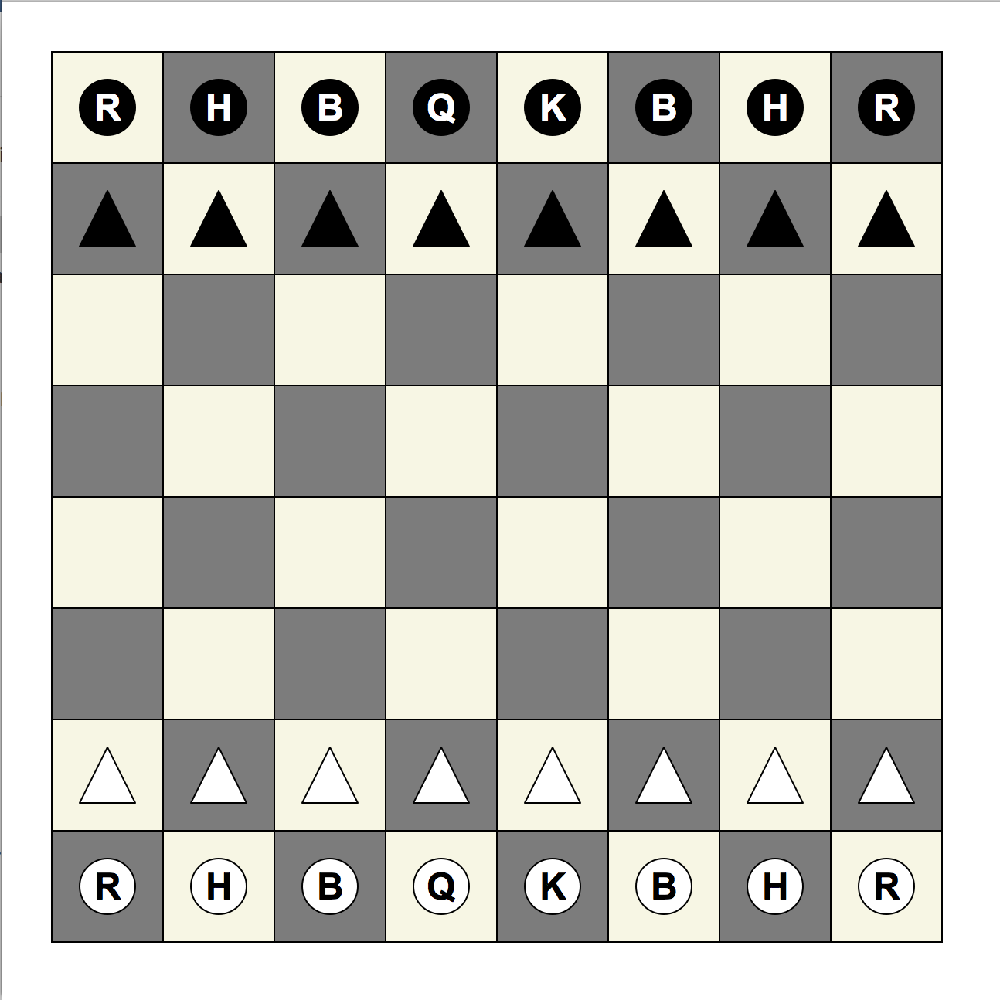

CMU 15-112 Spring 2018: Fundamentals of Programming and Computer Science
Homework 4 (Due Saturday 10-Feb, at 8pm)
- This assignment is SOLO. This means you may not look at other student's code or let other students look at your code for these problems. See the syllabus for details.
- To start:
- Go to your folder named 'week4'
- Download both hw4.py and cs112_s18_week4_linter.py to that folder
- Edit hw4.py using Pyzo
- When you are ready, submit hw4.py to Autolab. For this hw, you may submit up to 7 times, but only your last submission counts.
- Do not use recursion this week.
- Do not hardcode the test cases in your solutions.
- Lab Problems [10pts]
Attend your scheduled lab on Friday. While there, complete the basic problem and make a real attempt at the advanced problem. One of the TAs will record your participation by hand. - Style + TP Meetings [10pts]
Sign up for and attend a ten-minute meeting with one of your recitation TAs where you will discuss a) how to improve your programming style (based on your hw3 submission) and b) early ideas you have for your term project. To make the best use of this time, come prepared by reading the feedback you received on style from hw3 and spend at least a few minutes ideating on term project ideas before the meeting. You must have this meeting by the main assignment deadline, Saturday at 8pm. - List Function Table [10pts]
There are many different list functions that exist in Python which change the contents of the list. Some of these functions are destructive (changing the list they're called on), others are nondestructive (creating a new list as a result). Next to each of the functions listed below, write whether the function is destructive or non-destructive to the list a. Include your table in a triple-string comment in hw4.py.
""" a = a + b a += b a.append(x) a.insert(0, x) a.extend(b) a.remove(x) a.pop(0) del a[0] a.reverse() reversed(a) a.sort() sorted(a) copy.copy(a) """
- inverseLookAndSay(a) [15pts]
Write the function inverseLookAndSay(a) that does the inverse of the function lookAndSay from the colab, so that, in general:inverseLookAndSay(lookAndSay(a)) == a
Or, in particular:inverseLookAndSay([(2,3),(1,8),(3,-10)]) == [3,3,8,-10,-10,-10]
- bestScrabbleScore(dictionary, letterScores, hand) [25pts]
Background: In a Scrabble-like game, players each have a hand, which is a list of lowercase letters. There is also a dictionary, which is a list of legal words (all in lowercase letters). And there is a list of letterScores, which is length 26, where letterScores[i] contains the point value for the ith character in the alphabet (so letterScores[0] contains the point value for 'a'). Players can use some or all of the tiles in their hand and arrange them in any order to form words. The point value for a word is 0 if it is not in the dictionary, otherwise it is the sum of the point values of each letter in the word, according to the letterScores list (pretty much as it works in actual Scrabble).
In case you are interested, here is a list of the actual letterScores for Scrabble:letterScores = [ # a, b, c, d, e, f, g, h, i, j, k, l, m 1, 3, 3, 2, 1, 4, 2, 4, 1, 8, 5, 1, 3, # n, o, p, q, r, s, t, u, v, w, x, y, z 1, 1, 3,10, 1, 1, 1, 1, 4, 4, 8, 4,10 ]Note that your function must work for any list of letterScores as is provided by the caller.
With this in mind, write the function bestScrabbleScore(dictionary, letterScores, hand) that takes 3 lists -- dictionary (a list of lowercase words), letterScores (a list of 26 integers), and hand (a list of lowercase characters) -- and returns a tuple of the highest-scoring word in the dictionary that can be formed by some arrangement of some subset of letters in the hand, followed by its score. In the case of a tie, the first element of the tuple should instead be a list of all such words in the order they appear in the dictionary. If no such words exist, return None.
Note: you should definitely write helper functions for this problem! In fact, try to think of at least two helper functions you could use before writing any code at all.
Another note: there is no fixed dictionary here. Each time we call the function, we may provide a different dictionary! It may contain 100 words or perhaps 100,000 words. - drawChessboard(winWidth, winHeight) [30pts]
Write the function drawChessboard which draws the chessboard shown below. Chess pieces are represented as letters inside of circles (R for rook, H for horse/knight, B for bishop, Q for queen, and K for king), and pawns are represented as triangles. The top pieces are black, the bottom pieces are white, and the board itself is alternating squares of off-white and off-black (we used beige and dimgray to get the appropriate colors). Your chessboard does not have to be pixel-perfect identical to our example, but it should be fairly similar, and it should adjust in size based on the provided winWidth and winHeight.
 - Bonus/Optional: drawSpiral(winWidth, winHeight) [3pts]
Write a function named drawSpiral(winWidth, winHeight) that takes two ints and creates a window of the given dimensions, and then draws this picture (to fill the window as completely as possible):
Here, you will draw both sides of the picture (the larger and smaller spirals), along with the title text (drawSpiral) and the boxes around the spirals.
As for the image, each side will be a spiral (or really a series of spiral arms). The spiral arms must be created by drawing a series of circles (the only thing drawn to create the spirals in this exercise are small circles). There should be 28 arms, each arm composed of 32 circles. Each arm spirals, or bends, such that the outermost circle in the arm is drawn pi/4 radians (45 degrees) beyond the innermost circle in that same arm. Hint: You will have to use basic trigonometry here! Also, try to make the color gradients work as indicated (think rgbString).